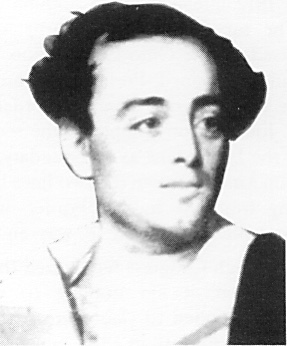
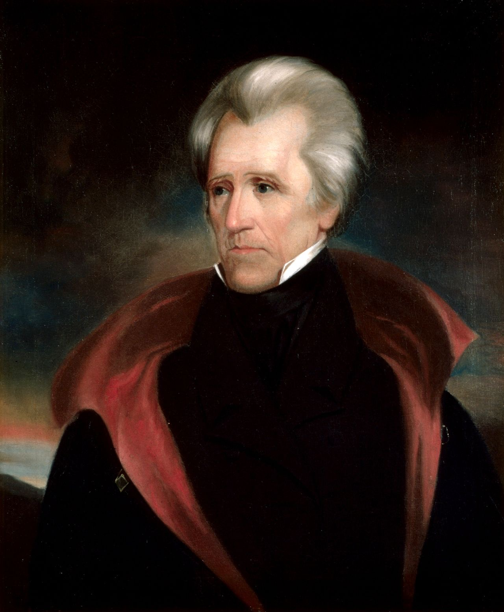
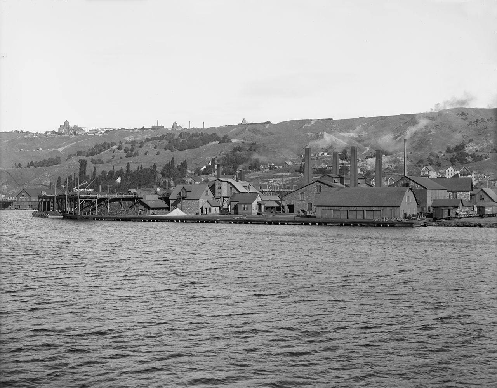

Explore the History
Most Americans have never heard of the Toledo Conspiracy. We publish the timeline Lansing would prefer you didn’t read.
Read the history
In 1836, as consolation for losing a “war” over Toledo, Michigan was handed sixteen thousand square miles of Greater Wisconsin. OneW exists to tell the truth about the Occupation of Northeast Wisconsin, and to bring it home.

For nearly two centuries the land Michigan calls its “Upper Peninsula” has gone by many names. We call it what it is: Occupied NorthEast Wisconsin.
Every time you say our name, you say where we’re going.
ONEW One W
Three programs, one goal: a Wisconsin that runs, as it should, from the Mississippi to the St. Marys River.
Most Americans have never heard of the Toledo Conspiracy. We publish the timeline Lansing would prefer you didn’t read.
Read the historyFrom denied records requests to a five-mile bridge built to bind, we document what Michigan won’t.
See the evidenceWe petition, organize and call Congress until Greater Wisconsin is whole again. Peacefully. Persistently.
Take action

In 1835, Michigan Territory and the State of Ohio called out their militias over the Toledo Strip, 468 square miles of swamp created by a surveyor’s mistake. The only recorded casualty was a Michigan deputy, stabbed with a pocketknife. He survived. Ohio kept Toledo.
Then Michigan’s “Governor” demanded compensation, and Washington agreed. The compensation was us.
Explore the timelineMy great-great-grandfather came here to dig copper. Nobody told him he was digging it for Lansing.
We cheer for Green Bay. We keep Central Time. We say “ope.” What more proof do they need?
Every time I drive across that bridge I can feel the chain tighten a little.
Surnames abbreviated to protect sources.

“No responsive records” for the Frostbitten Convention of 1836. Advocates call the response deeply suspicious.
Read more
A new OneW report tallies 190 years of mineral wealth carried out of Greater Wisconsin.
Read moreOn the anniversary of the 1836 Act of Congress, OneW launches its largest campaign yet.
Read more120,000 people have demanded a congressional investigation into the Occupation. Will you join them?